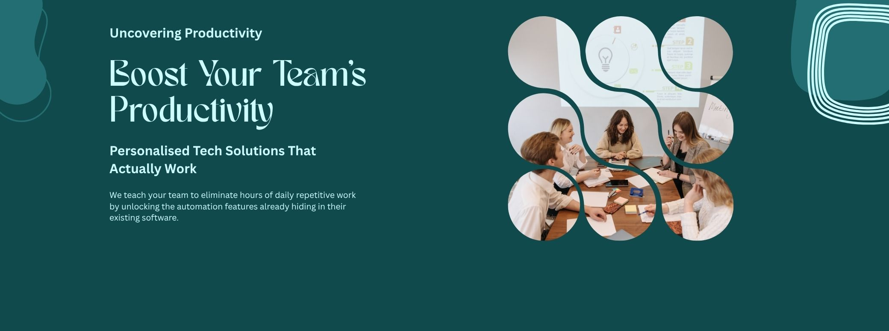

Boost Your Team's Productivity: Personalised Tech Solutions That Actually Work
Our Approach
We know every administrative professional faces different challenges. Our consultants work directly with each person to identify what's slowing them down most, then create tailored tech solutions to get those hours back.
No generic training—just real solutions for real problems. Let's face it - generic training makes sense on the day, but it's hard to implement in daily work once it's over.
A good example of the manual tasks that eat up most time is copying and pasting information or documents to various places. There is usually a better way when you have the computer working for you instead of the other way around.
We turn your daily admin struggles into daily admin wins.
Individual Support
One-to-one consultation
Ideal for: Administrative assistants, office managers, and mid-level managers who want focused, personal attention
Get completely personalised support to tackle your biggest time-wasters. Our consultant works exclusively with you to understand your daily frustrations and build custom tech solutions that fit exactly how you work.
What's included:
- Personal workflow review to identify your biggest time drains
- Custom tech recommendations designed specifically for your role
- Hands-on setup and implementation support
- Follow-up sessions to fine-tune your new systems
Duration varies based on individual needs and complexity of solutions
Small Team Efficiency
2-5 people
Ideal for: Small admin teams, PA groups, or departments wanting both individual and collaborative improvements
Everyone gets personal attention while we also build connections between team members' workflows. We tackle individual time-wasters and create shared systems that help the whole team work better together.
What's included:
- Individual assessment for each team member
- Personalised tech solutions for everyone's unique challenges
- Team collaboration tools and shared workflows
- Training on both individual efficiency and team coordination
- Group sessions with one-to-one breakouts as needed
Duration varies from half-day workshops to multi-day programmes depending on team size and requirements
Department Transformation
6+ people
Ideal for: Larger administrative teams, multi-department groups, or organisations wanting comprehensive change
Scale doesn't mean less personalisation. Every team member receives individual attention to solve their specific problems, while we also optimise how everyone works together across the wider team.
What's included:
- One-to-one workflow assessment with each person
- Tailored tech solutions addressing individual pain points
- Department-wide systems that connect everyone's work
- Training designed for different experience levels
- Focus on both personal efficiency and cross-team collaboration
- Ongoing support to ensure lasting change
Duration typically ranges from same-day intensive programme to phased implementation over two or three days
Why This Works
Our clients typically save 1-3 hours per week once they implement their personalised solutions. That's time back in their day and less stress trying to keep up with everything.
Ready to see what's eating up your time? Get in touch for a free initial consultation.
Pricing Structure
| Training Tier | Full Programme Price | Phase Breakdown | Total Cost Examples |
|---|---|---|---|
| Individual Support (1 person) |
£950 per person | Initial Assessment: 1.5 hours Main Implementation: 4.5 hours Follow-up Session: 1 hour (7 hours total = 1 day equivalent) |
1 person: £950 |
| Small Team Efficiency (2-5 people) |
£550 per person | Initial Assessment: 1.5 hours Main Implementation: 4.5 hours Follow-up Session: 1 hour (7 hours total = 1 day equivalent) |
2 people: £1,100 5 people: £2,750 |
| Department Transformation (6+ people) |
£375 per person (20+ people: £300 per person) |
Initial Assessment: 2 hours Main Implementation: 4 hours Follow-up Session: 1 hour (7 hours total = 1 day equivalent) |
10 people: £3,750 20 people: £7,500 30 people: £9,000 |